1 CMake kurulumu
CMake indirme sayfasından CMake'i indirin. Kurulum sırasında aşağıdaki seçeneği işaretleyin:
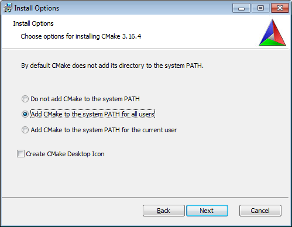
2 Ninja kurulumu
ninja-build/ninja Releases sayfasından ninja-win.zip dosyasını indirin.
Win + R ile Çalıştır penceresini açın ve şunu yazın: %localappdata%
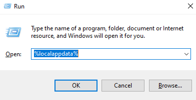
Açılan pencerede Ninja adında bir klasör oluşturun ve ninja.exe'yi içine atın.
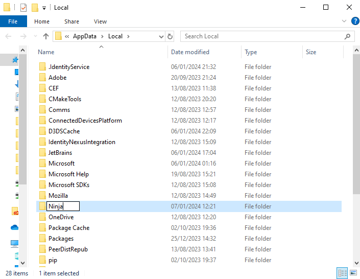
Bu klasörün dosya yolunu kopyalayın.
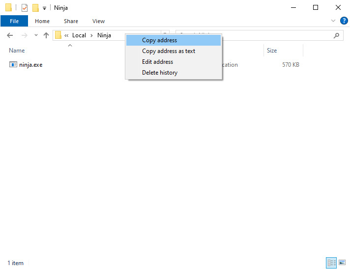
Win tuşuna basıp ortam değişkenleri diye aratın ve çıkan sonuca tıklayın.
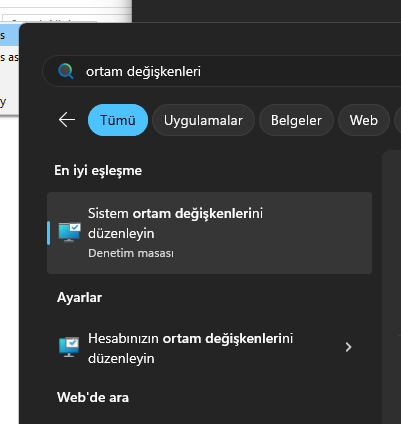
Açılan pencerede Ortam Değişkenleri düğmesine tıklayın.
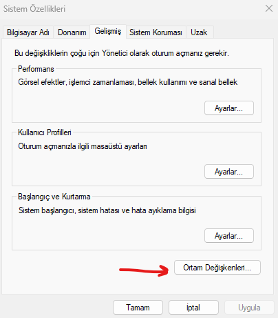
Kullanıcı değişkenleri bölümünde Path'i seçip Düzenle'ye tıklayın.
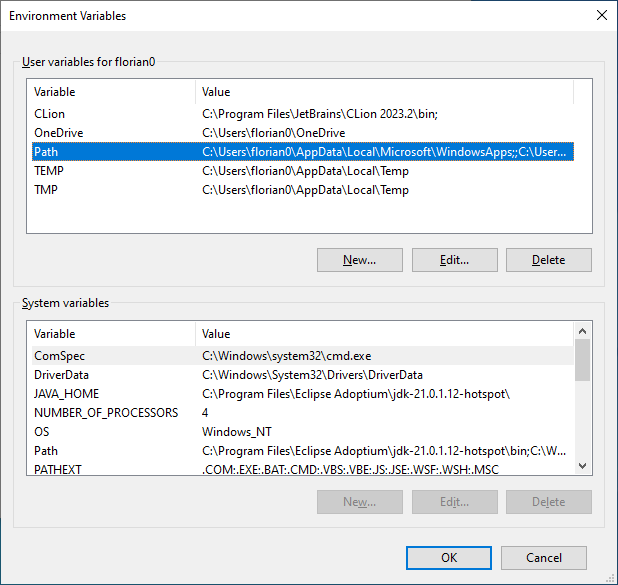
Yeni deyip kopyaladığınız klasör yolunu yapıştırın, Tamam ile kapatın.
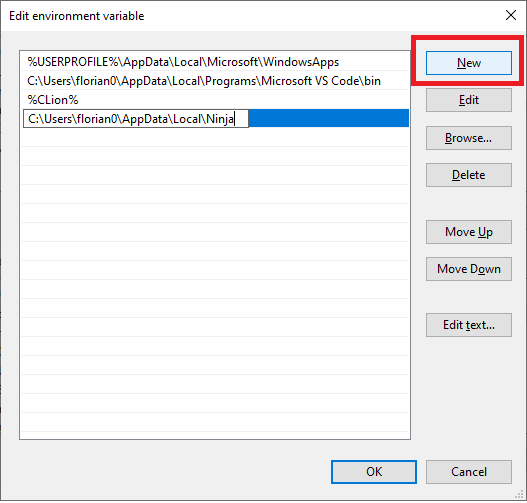
3 Visual Studio 2005 kurulumu
Internet Archive – Visual Studio 2005 180-Days Trial adresinden indirip kurun. Ekstra bir ayar yok: Next, Next 🙂
4 Visual Studio 2022 kurulumu
Ön gereksinimler bitti, şimdi Visual Studio 2022'yi kuralım.
Visual Studio 2022 sayfasından indirin ve yükleyici ekranında aşağıdakileri seçin:
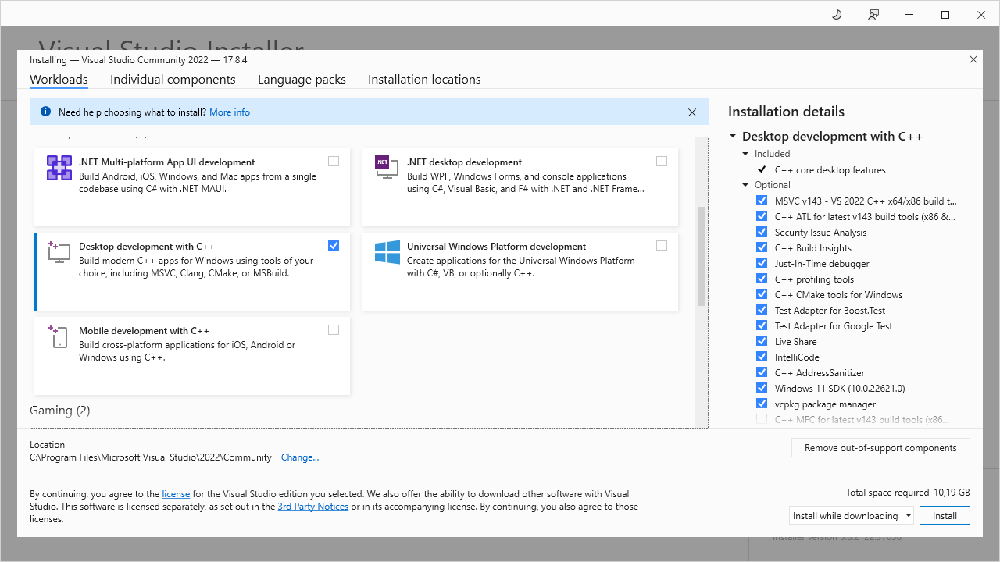
5 DevKit'i klonlama ve derleme
VS 2022 açılınca Clone repository'yi seçin. florian0 / SRO_DevKit · GitLab adresini kopyalayıp aşağıdaki alana yazın:
https://gitlab.com/florian0/sro_devkit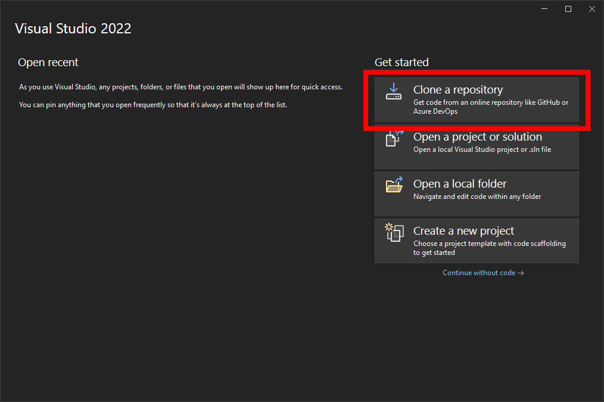
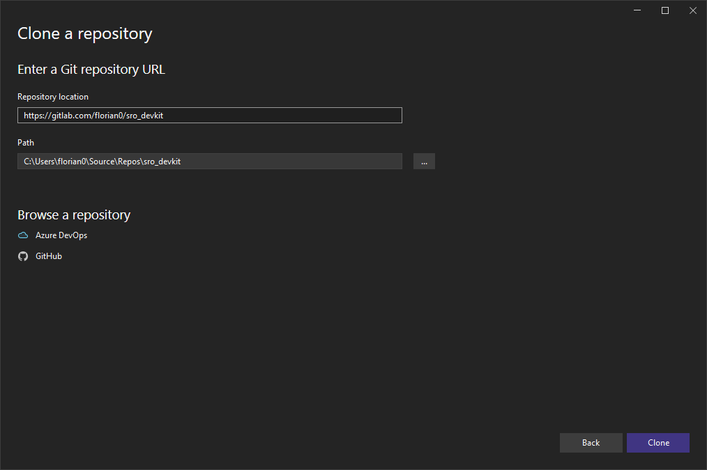
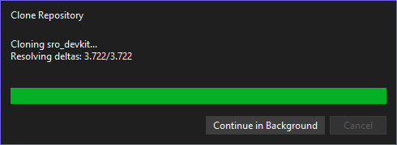
Klonlama bittikten sonra Klasör Aç deyin ve devkit klasörünü seçin.
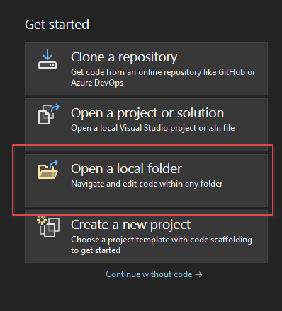
Aşağıdaki gibi seçili olduğundan emin olun:
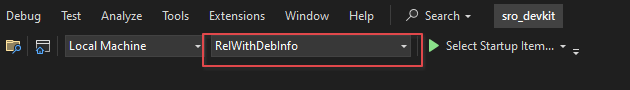
Başlangıç projesi olarak DevKit_DLL'i seçin:
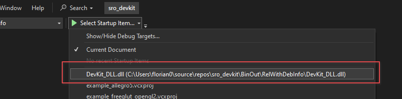
Build edin:
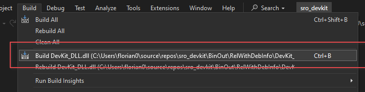
Buraya kadar hatasız geldiyseniz çıktılar şu klasörde olacaktır: .\sro_devkit4\BinOut\RelWithDebInfo
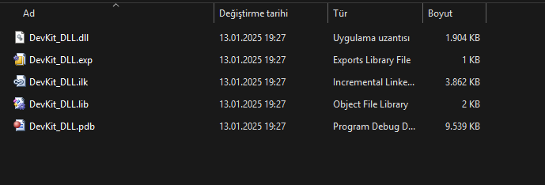
6 DLL'i client'a inject etme
Softpedia – Stud_PE adresinden Stud_PE'yi indirin.
Stud_PE'yi açın. File → Open PE ile sro_client.exe'yi seçin ve Functions sekmesine tıklayın.
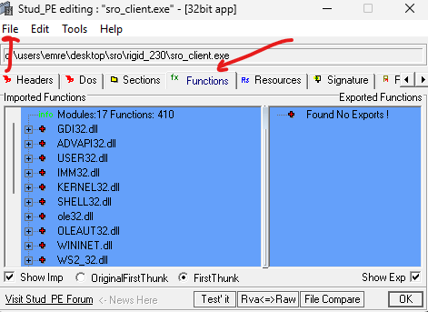
Functions'taki DLL listesinde sağ tık → Add New Import.
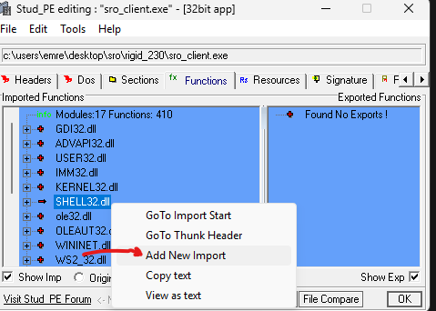
Dll Select deyip devkit DLL'ini seçin:
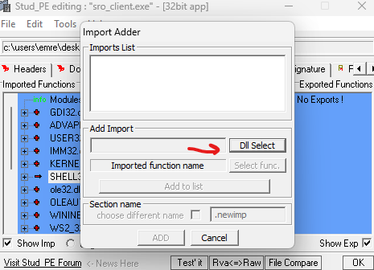
Select Function deyip çıkan listeden DllMain'i seçin ve Add to list deyin.
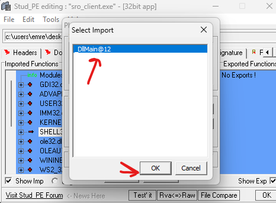
Add ve ardından OK deyip kapatın.
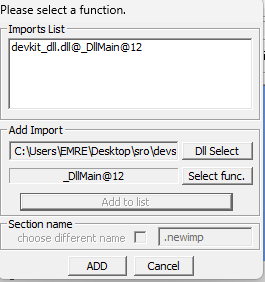
Oluşturduğunuz devkit DLL'ini client klasörüne atın ve oyuna girin. Her şey yolundaysa hatasız girebileceksiniz.
7 ISRO için
Buraya kadarki anlatım VSRO içindir. ISRO için Bimbum'un devkit reposundan yalnızca source klasörünü alıp florian'ın klasörüne atın, derleyin ve adımları tekrarlayın. Yazarın uyarısı: biraz bugludur.